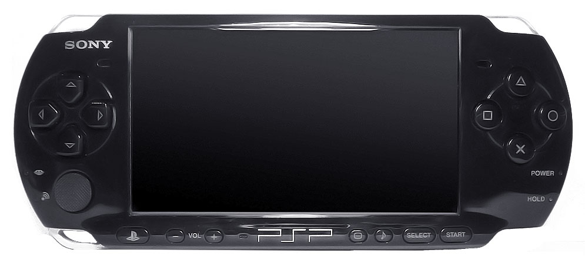
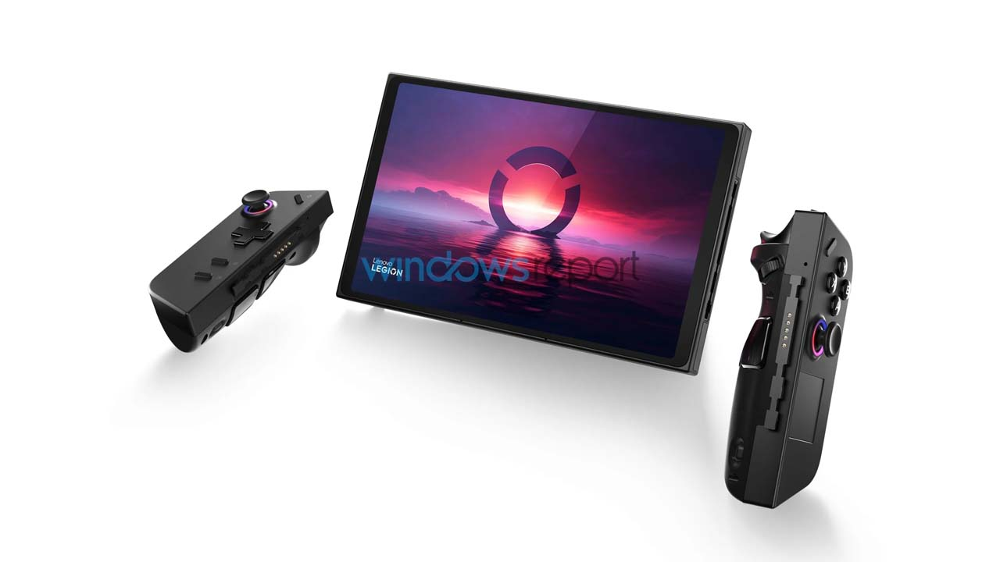

Accessories
Devices
2TB SSD, advanced ray tracing, and AI-driven upscaling (PSSR)
for higher framerates. It supports 8K output and has 18.05 TFLOPS of peak power.
Price:
PHP 47,500

including a custom NVIDIA processor, 12 GB of RAM, 256 GB of storage,
a larger 7.9-inch 1080p LCD screen, and support for 4K output when docked.
Price:
PHP 27,650

|
The Sony PSP-3000 (2008) is a slimmed-down handheld console featuring a 4.3-inch TFT LCD screen with 480 x 272 pixel resolution, 64MB system RAM, and a 333MHz MIPS R4000 CPU. It improved on previous models with a brighter screen, built-in microphone, and enhanced anti-reflective display technology. Price: PHP 3,500  |
The Lenovo Legion Go is a premium Windows-based handheld gaming console featuring a large 8.8-inch QHD+ (or OLED) display, detachable TrueStrike controllers, and up to an AMD Ryzen Z1/Z2 Extreme processor. It offers versatile gaming modes (handheld, FPS, tabletop) and high-performance specs suitable for demanding AAA titles. Price: PHP 64,400  |